Isolated bundle com.loopflow.mac.qa50f7f9.dev with QAHook.swift, branch at 161d82a392. Private Machine /tmp/lfq8: branch lf server, one git-planned repository with one Task, no theme:, and a personal theme named Northern Lights Over The Harbor At Dawn (a copy of Fjord Light) for the long-name case. The display was in use, so the app ran with open -n -g and was driven through the hook. Run 2026-11-22.
The bar reads "Customize Loopflow Light · Advanced", then Cancel · Apply. Loopflow Light and Loopflow Dark are both ringed; the button names the light one, which is the one previewing.
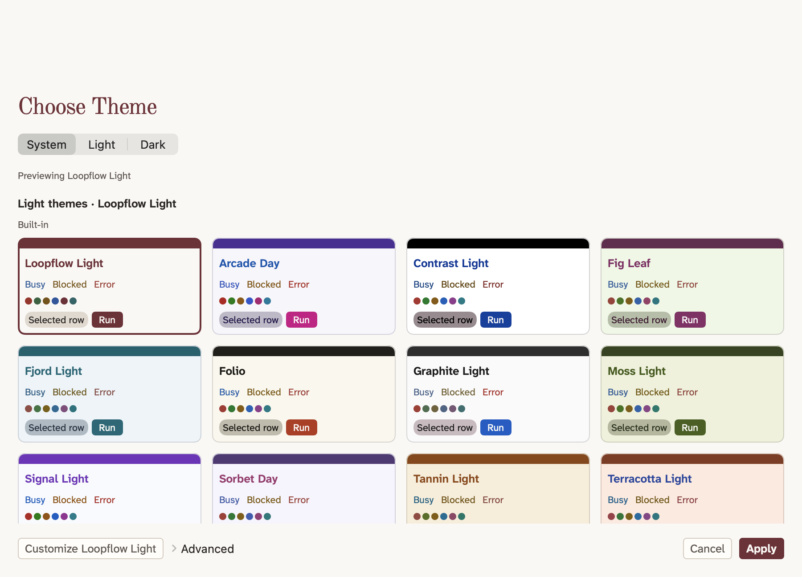
Fig: the window turns plum, "Previewing Fig", the dark heading reads "Dark themes · Fig", and the button reads "Customize Fig". The light heading still names Loopflow Light, so the two ringed cards are told apart by the bar.
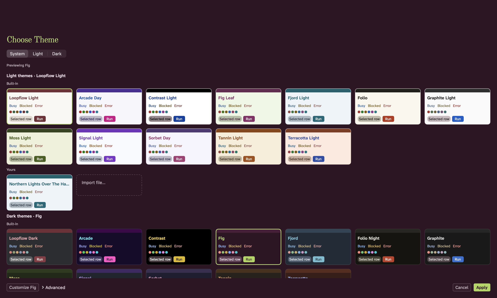
At 1500 pt the bar shows "Customize Northern Lights Over The Harbor At Dawn · Delete Northern Lights Over The Harbor At Dawn · Advanced" in full. At 700 pt (the minimum) both buttons truncate in the middle of the name ("Customize Northern Light…", "Delete Northern Lights Ov…"); Advanced, Cancel and Apply stay whole and nothing wraps or overlaps.
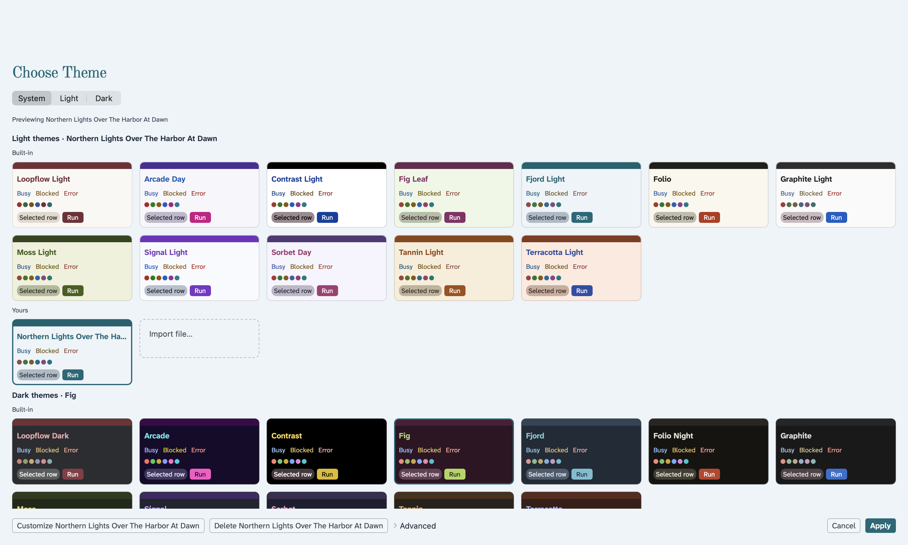
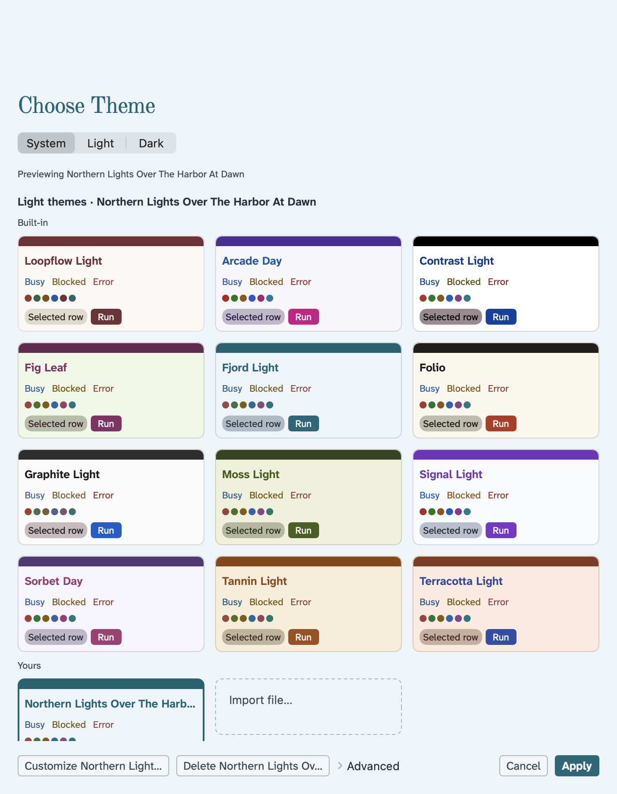
On Folio, one click on "Customize Folio" opens the editor; the bar reads "Done Editing · Revert Folio to built-in · Advanced". Done Editing returns to the grid with "Customize Folio · Revert Folio to built-in". Choosing Fig then shows only "Customize Fig": the staged Folio copy's Revert waits until Folio is chosen again, as the bar acts on the card chosen last. Cancel wrote nothing (themes/ held only the personal file, config.yaml had no theme:).
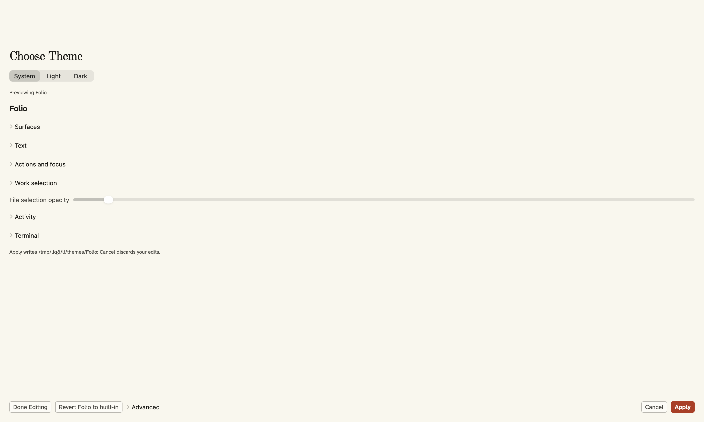
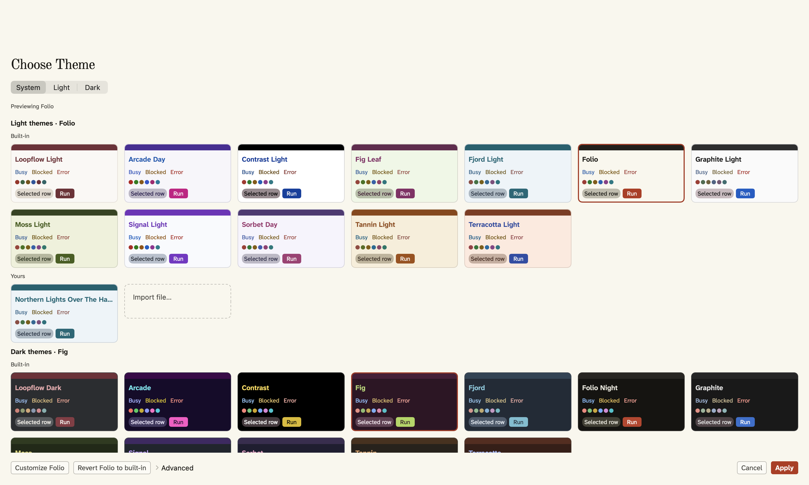
With Fig chosen and then the long-named theme, "Delete Northern Lights Over The Harbor At Dawn" removes its card; the light side falls back to Loopflow Light and the bar renames itself "Customize Loopflow Light". Apply wrote theme: light:Loopflow Light,dark:Fig and removed the file. Reopening Settings drew every card.
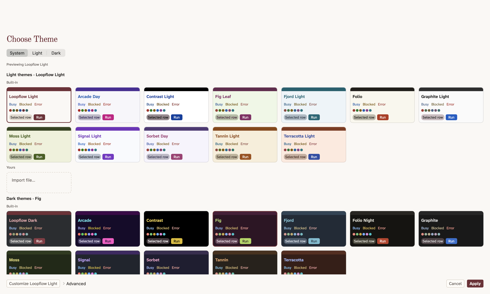
Every bar button names its theme and follows the last card chosen, across both sides in System mode, through the editor, Delete and Revert. Long names truncate at the minimum width without breaking the bar.
A key window's title bar, the real Import panel, the editor's disclosure groups (Title bar row), and the phone and site: unchanged this round, and the hook can't make a window key or open panels.
1. At 700 pt a long personal name leaves both buttons truncated to the same prefix, and Customize's tooltip for your own theme says "Edit your theme" without the name, so the full name is only in the heading. 2. Round 7's notes stand: Customize and Done Editing share a spot, and Delete shifts Advanced right.
Isolated bundle com.loopflow.mac.qa50f7f9.dev with QAHook.swift, branch at fef71de686. Private Machine /tmp/lfq7: branch lf server, one git-planned repository with one Task, and a personal theme My Harbor (the pre-round-7 Harbor Light file), standing in for someone who had Harbor. The display was in use (idle 0 s), so the app ran with open -n -g behind other windows and was driven through the hook. Run 2026-11-22.
No config, so Loopflow Light. The bottom bar reads Customize · Advanced, then Cancel · Apply. 12 light cards (Folio is the light half of the Folio pair), 12 dark, no Harbor. The saved Harbor file stays under Yours as My Harbor.
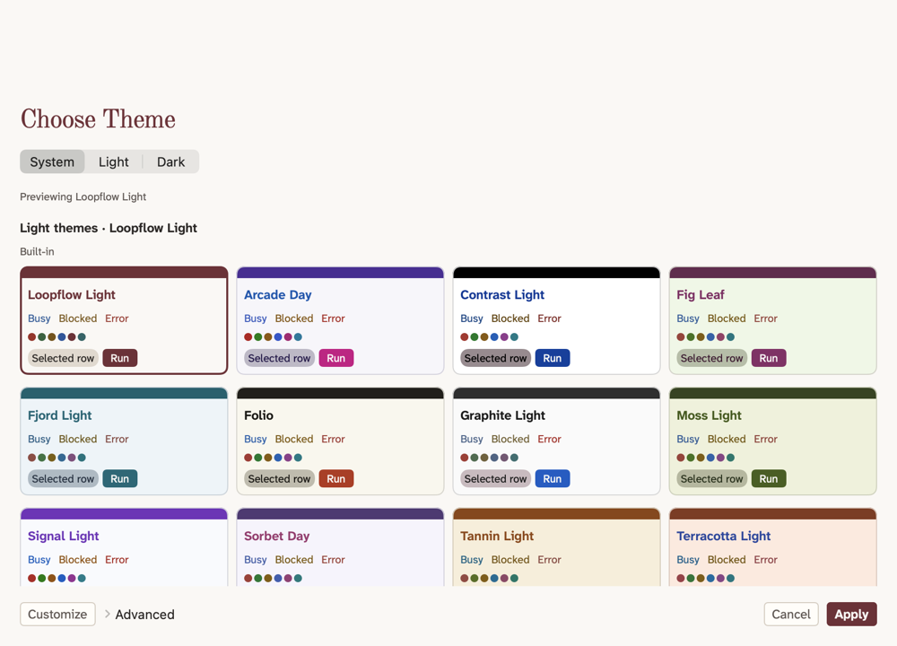
Horizontal edges down one column of the grid, before and after choosing Arcade Day: 536, 558, 750, 778, 800, 1018… both times. They also match when choosing My Harbor (Delete appears) and Arcade Day again. Arcade Day previews on #f7f6fa (the Paper ground), pale grey-lilac rather than pink; its Run button and Apply stay magenta.
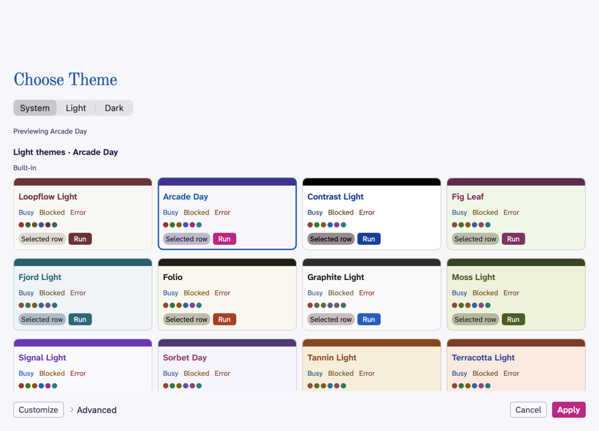
Choosing My Harbor adds Delete after Customize; Advanced moves right by one button, and the grid doesn't move. Delete takes the card out of the preview and falls back to Loopflow Light, but the file stays on disk until Apply. Cancel closed the window, and on reopening My Harbor was there.
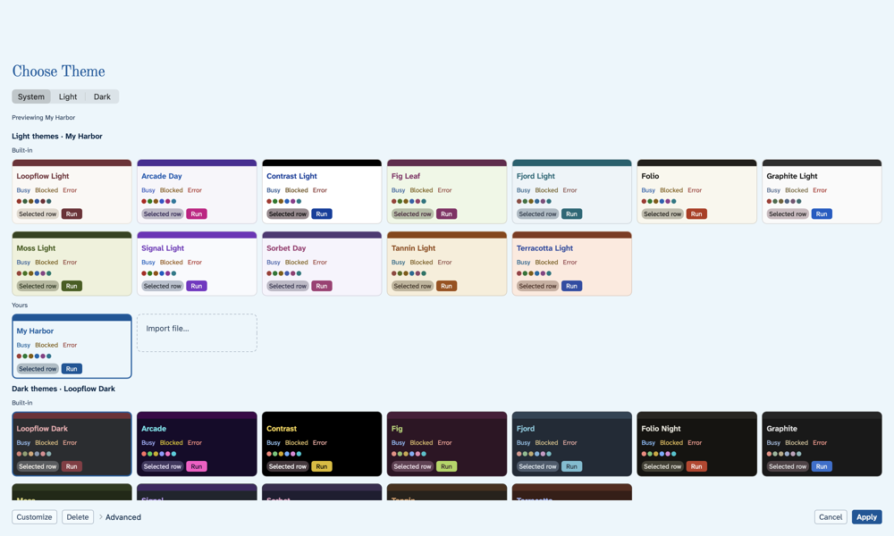
After Cancel, reopening Settings and widening the window drew the Yours row too short. The dark heading sat over My Harbor's buttons until the window was resized again. Closing and reopening twice more drew no cards at all: headings, Yours and the bottom bar, with empty space where the grids go. A real window capture (screencapture -l) was just as blank, so it isn't the hook's cacheDisplay. This is round 5's R5.10, here with no unknown-name notice up. The cause is the LazyVGrid: it estimates rows it hasn't drawn and drops its cells when the Settings window closes.
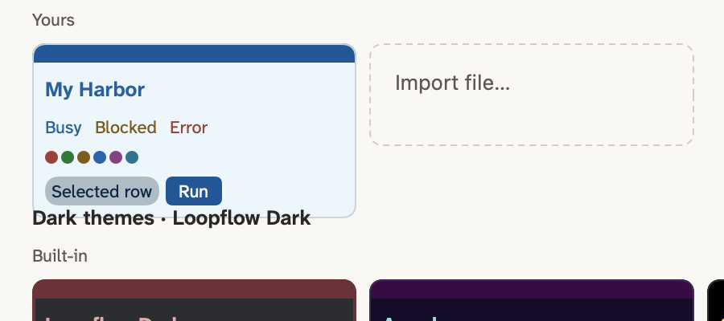
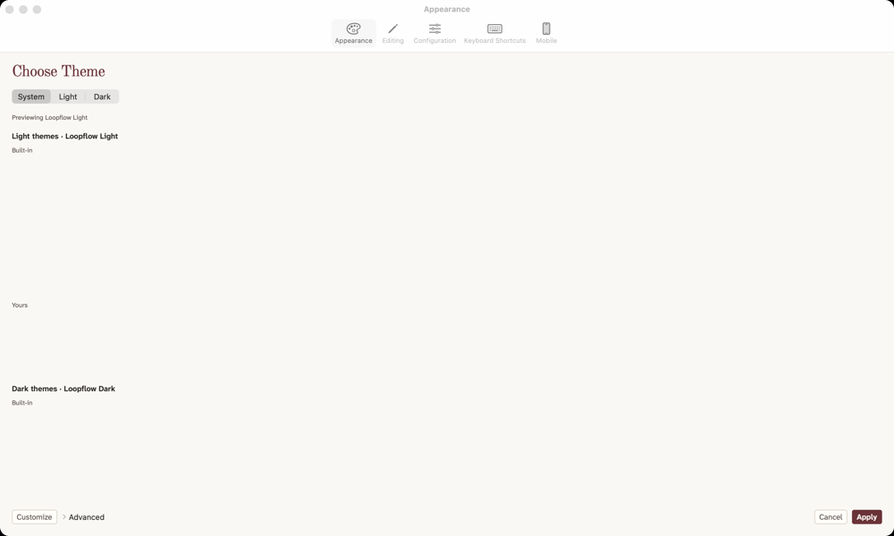
Fix: ThemeChooser's grids are a small non-lazy CardGrid layout: equal columns at least 180 pt wide, each row as tall as its tallest card. A grid holds at most 13 cards, so laziness bought nothing. The first build trapped when Settings opened (exit 6): SwiftUI asks a layout's ideal size with an infinite width, and Int(.infinity) traps. An unbounded width now answers with one column. Rerun: four close/reopen cycles each drew every card with no overlap, and resizes answer in 0.3 s. ThemeWorkflowTests|ThemeTests: 27 passed.
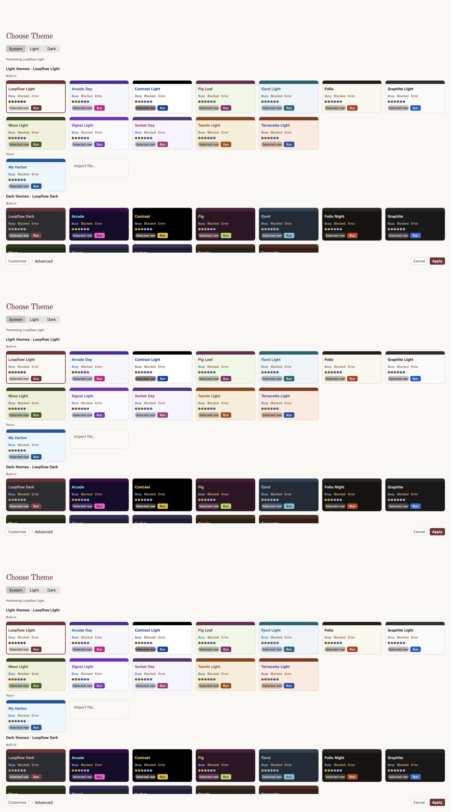
At 700 pt with My Harbor chosen, Customize · Delete · Advanced · Cancel · Apply fit on one line with room to spare. The grid goes to three columns.
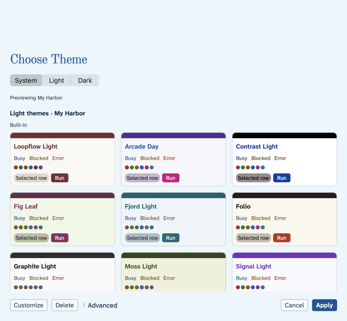
On Arcade Day, one click on Customize opens the editor: the bar becomes Done Editing · Revert to built-in · Advanced. Revert while editing goes back to the built-in card grid, with Customize · Advanced in the bar, and writes no file.
Done Editing replaces Customize in the same place, so a double-click opens the editor and closes it again. (My first attempt did exactly that.) Nothing is lost: the copy stays staged and Revert shows.
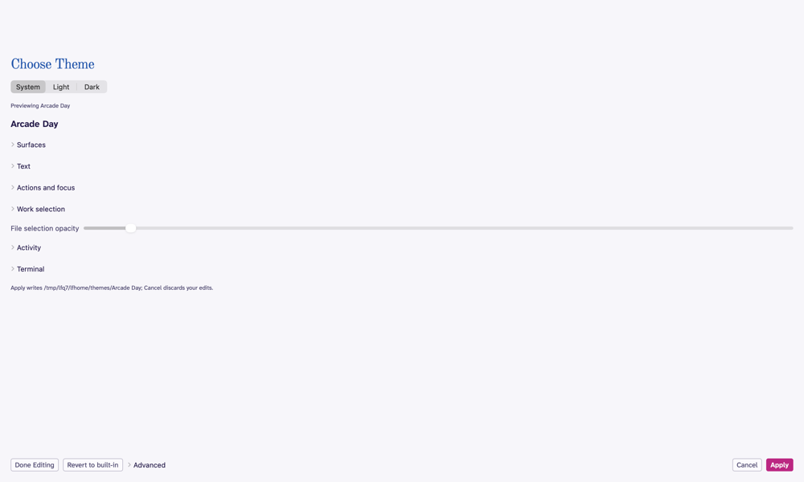
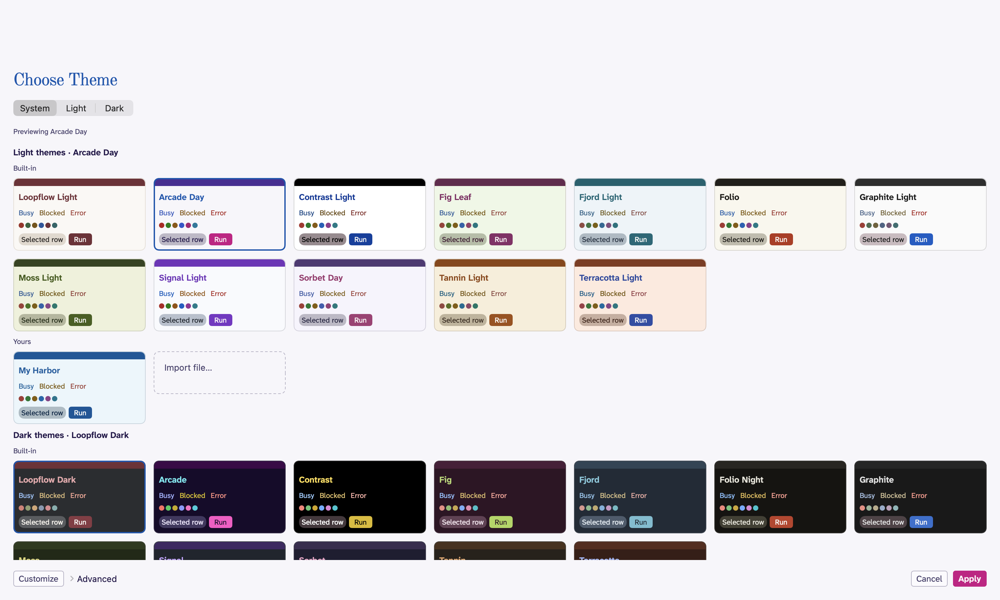
Apply answered a hook click this time (earlier rounds couldn't get one). It wrote theme: light:Arcade Day,dark:Loopflow Dark to the private config.yaml and closed the window. The repository window is on #f7f6fa with a #472f90 bar (not key, so lighter than stated).
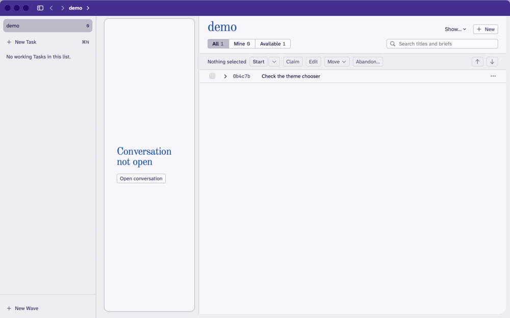
lf set --global theme "light:Harbor Light,dark:Harbor" on the running app: the window keeps Arcade Day. Choose Theme draws every card, and above the bar it says "No theme named "Harbor Light": keeping Arcade Day. Fix theme: in …/config.yaml with a built-in name or a file in …/themes."
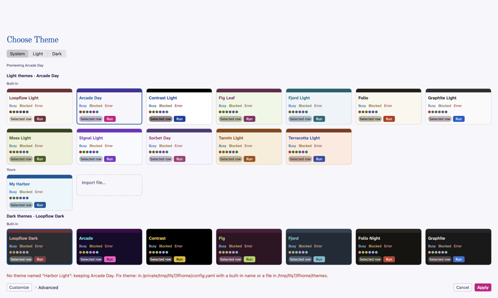
The catalogue is 12 + 12 with Harbor gone and old Harbor settings named as unknown. Arcade Day is on Paper. Customize, Delete and Revert live in the bottom bar and act on the chosen card; choosing a card never moves a row. Apply and Cancel work. The grid now draws on every reopen.
A key window's title bar, the real Import file panel, and the editor's disclosure groups (Title bar row): the hook can't make a window key or open panels, and the display was in use. The phone and the site didn't change this round.
1. Customize and Done Editing share a spot, so a double-click toggles the editor open and shut. 2. Choosing your own theme pushes Advanced right by Delete's width; the grid holds still, but the bar shifts.
Isolated bundle com.loopflow.mac.qa50f7f9.dev with QAHook.swift, branch at a630122eaa. Private Machine /tmp/lfq6 (one git-planned repository, one Task, theme: "light:Fig Leaf,dark:Fig") served first by a copy of the installed lf (0.16.0+c4de2038f), then by the branch lf on the same home. Screen locked. Run 2026-11-22.
The window keeps Loopflow Light and the banner reads "The server (0.16.0+c4de2038f) can't read what this Loopflow (0.16.0+a630122ea) asked. Update the older one." No Choose Theme… button. (Round 5 showed config.theme: missing field `path` with the button.)
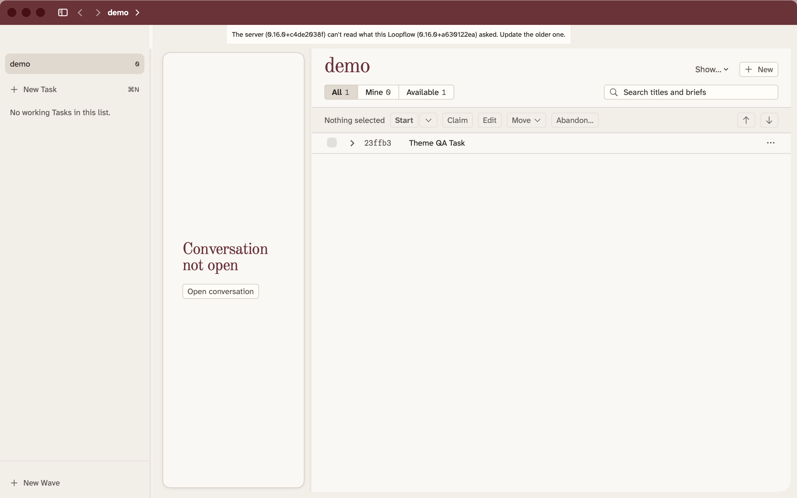
Settings → Appearance opens with all 13 light cards; the sentence sits above Cancel/Apply in the error color. No Advanced disclosure (the server never named its config path).
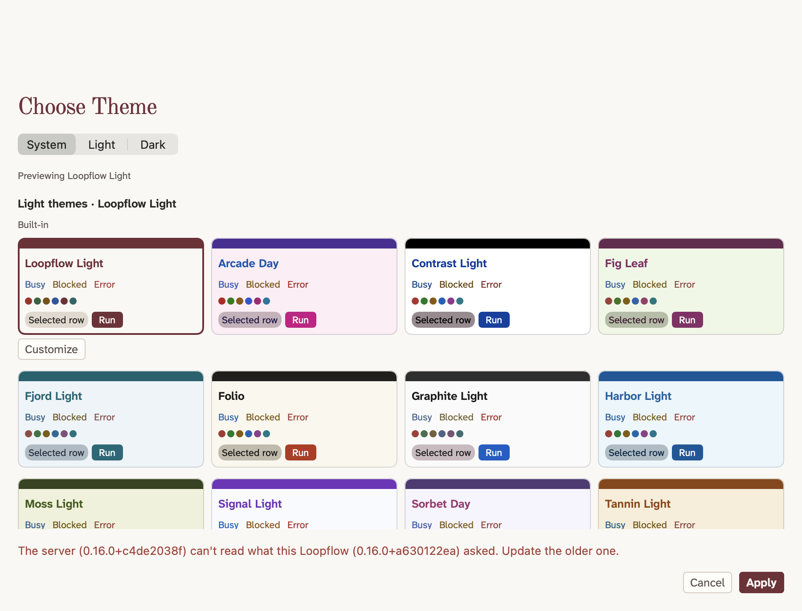
Stopping the 0.16.0 server and starting the branch server on the same home left the banner up and the theme on Loopflow Light; editing config.yaml changed nothing either. Only a relaunch would clear it. Round 6 moved the first fingerprint into a successful read, so after a failed first read there was no config path to watch and the 1 s watch never asked again.
Fix: AppearanceStore.reloadIfChanged asks the server again every tick while readFailure is set. Rerun: banner up against 0.16.0, then within 12 s of the branch server starting the banner went away and the window turned Fig Leaf, no relaunch. AppAppearanceTests passed.
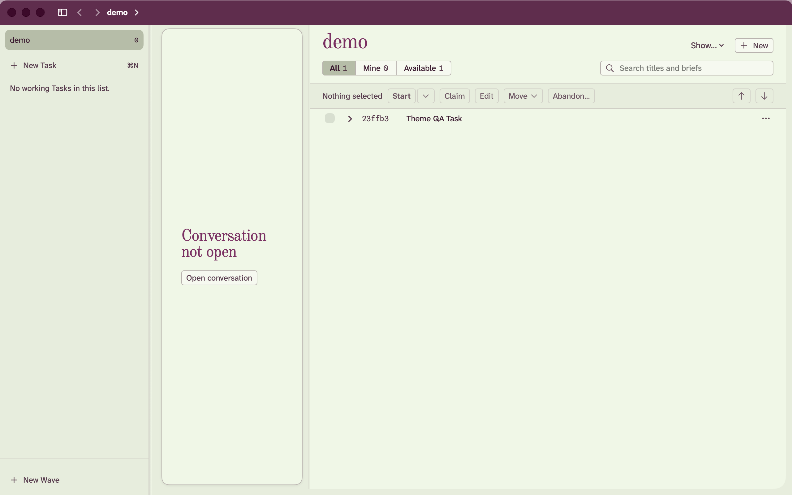
theme: "Verdigris": the banner names the server's file and keeps Choose Theme…. Choose Theme drew every light card with the notice up, Fig Leaf ringed. R5.10 did not reproduce this time.
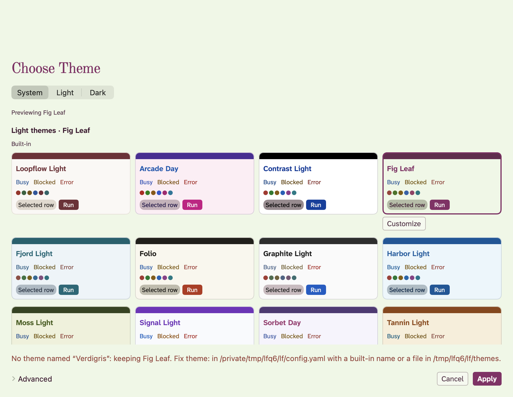
A released server's parse refusal reads as a sentence naming both builds, with no button that resends the request; the chooser still opens and shows the cards; updating the server clears the banner by itself.
An unlocked display: a key window's bar, the Import panel, Apply/Cancel clicks, the editor's Title bar row. The phone was not changed this round.
1. Both builds print as 0.16.0 plus a hash, so "Update the older one" leaves the person to work out which is older; the sentence can't say, since a branch build and a release share a version. 2. While a read keeps failing, Desktop sends one config.theme per second to the server (on its existing connection).
Branch lf at 726f6cd735 on a private Machine (LF_HOME under /tmp, theme: "light:Fig Leaf,dark:Fig", one git repository with two Tasks). Its own mobile listener on the tailnet name with mobile-same-device in that home, paired from a fresh iPhone SE simulator (iOS 26.2). Desktop: isolated bundle with QAHook.swift, screen locked (idle 3.4 h). Website: main.py on port 5077 with Playwright. Run 2026-11-22.
73 pages crawled from /: all 200, no text under 4.5:1 (3:1 for large text) against its computed background, no Pico blue in color, background, border or outline. Wine #722f37 on the warm #faf8f5 ground; the install command is now a light terminal block with a 1 px edge. Docs code blocks: Light's terminal ground with the --border edge.
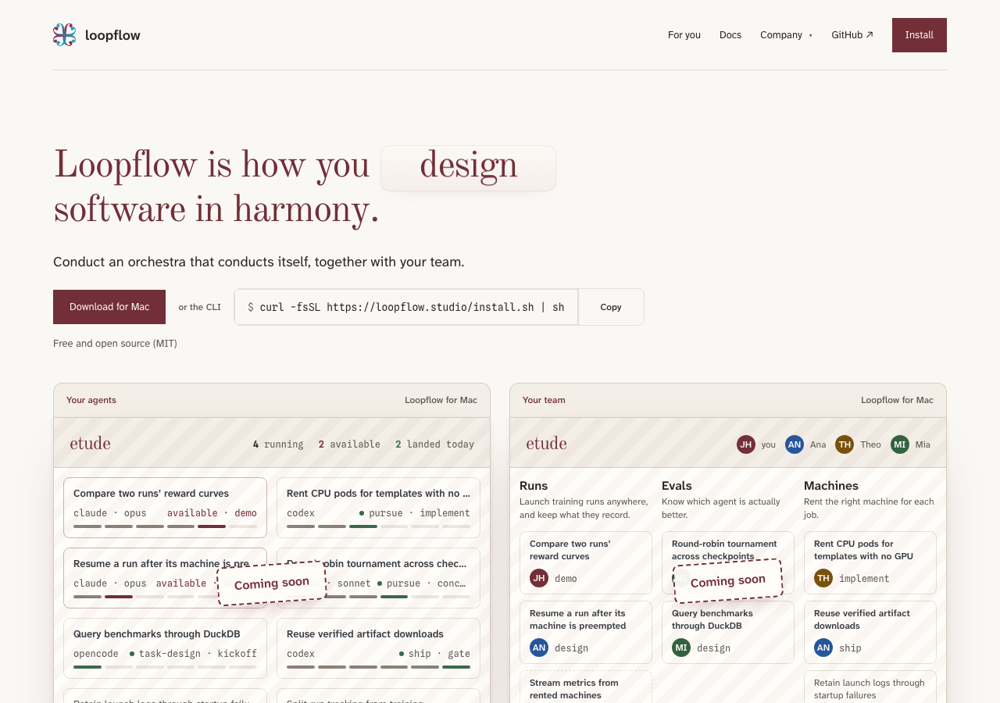
main for comparison (old pink-wine accent, black command block):
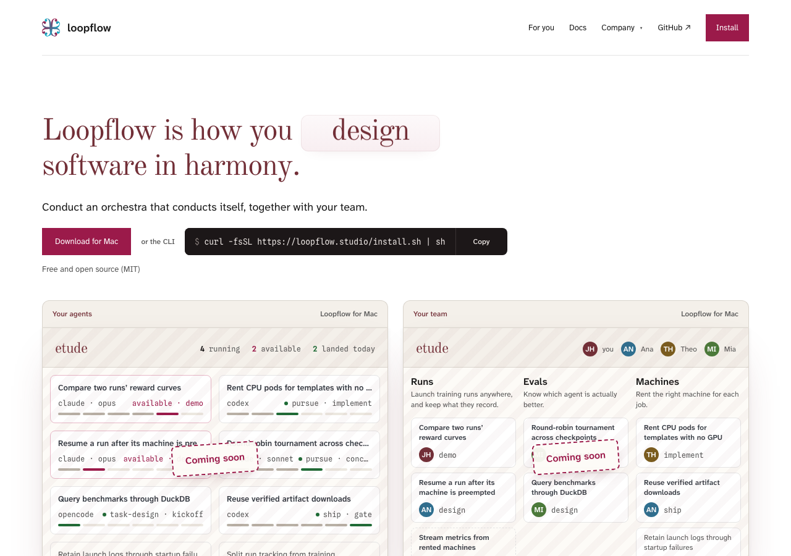
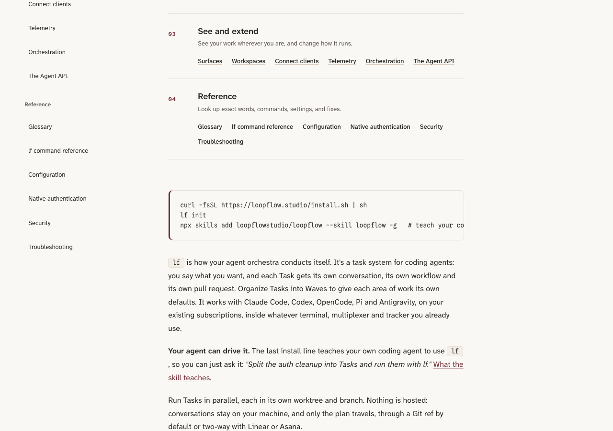
Tab through the header: "Company" drew Pico's blue focus ring (rgba(2,154,232,.5)), where every other link draws a 3 px wine ring. Pico's details summary:focus-visible:not([role]) outranked the header rule. Same on main.
Fix: the header rule is .site-header nav details summary:focus-visible:not([role]); Company now draws the wine ring. docs/dev/index.html regenerated; test_accessibility.py 17 passed, test_portable_architecture.py passed.
Before any Machine: Loopflow Light in light appearance, Loopflow Dark in dark.

theme: is light:Fig Leaf,dark:FigFig Leaf in light appearance, Fig in dark (switched with simctl ui appearance, no relaunch). Backlog rows and a Task's screen draw in the same roles.


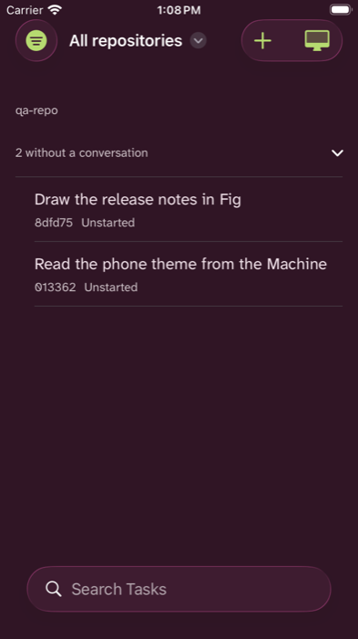
theme: Fig while the phone is lightBack to the foreground: Fig, with white system title text (the theme's own color scheme). The New Task sheet draws Fig too, so the implement note about UIKit sheets following the phone's appearance doesn't hold.

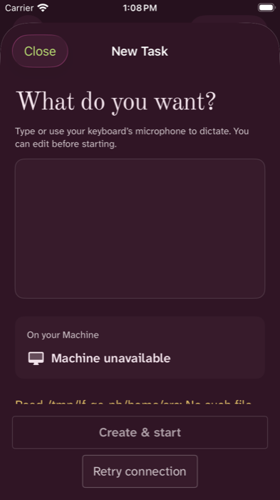
theme: "My Own Theme" → Loopflow Light in light appearance. An empty config → Loopflow Dark in dark.

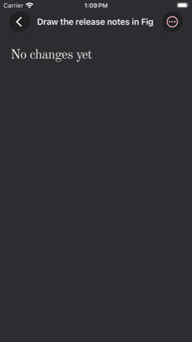
With the Machine's server stopped, a cold launch drew Fig from the remembered answer and said "The Machine is away; showing what was last read". After a restart the phone read Fig again. Forget Machine returned it to Loopflow's pair.
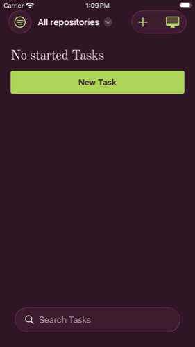
Paired with the live Machine (theme: Loopflow Light), in dark appearance: Tasks listed normally, the theme drawn was Loopflow Dark. The released server answers the new request with config.theme: missing field `path`; the phone keeps Loopflow's pair and shows nothing. It catches up when the Mac runs this build. No screenshot: the list shows personal Tasks.
Launch: the server log shows {"kind":"config.theme"} with no path; the window draws Fig Leaf; Choose Theme opens in System mode with "Light themes · Fig Leaf" ringed.
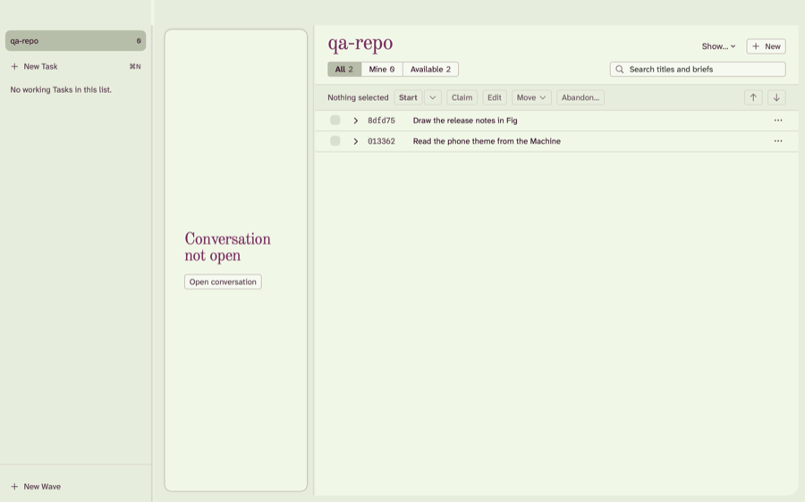
A live file edit to light:Moss Light,dark:Moss reached the running app within a few seconds (the watch follows the path the server named), and Choose Theme showed Moss Light chosen. A config.theme {value: "Fjord Light"} write over the socket (what Apply sends) wrote theme: Fjord Light and the window turned Fjord Light.

theme: "Verdigris": "No theme named “Verdigris”: keeping Fig Leaf. Fix theme: in /private/tmp/…/config.yaml …", naming the server's file, not this app's home.

A copy of the installed lf (0.16.0) serving the same home: Desktop kept the last good theme and showed config.theme: missing field `path` above the window with Choose Theme…, which can't help. Switching back to the branch server, the next file change cleared it. The reverse also fails: a 0.16.0 client's path gets "unknown field `path`" from this build. Both report revision 9.
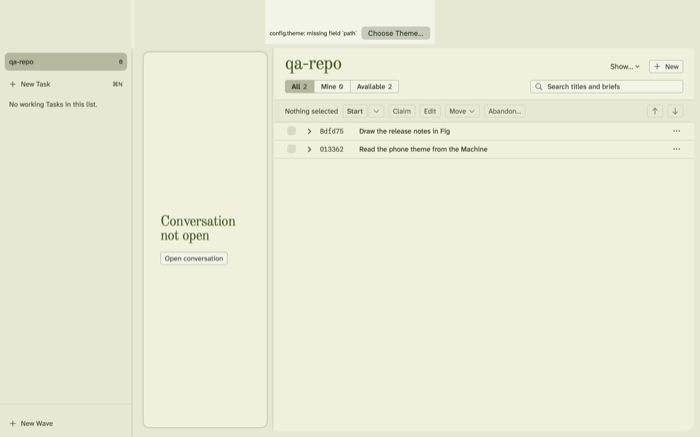
With the notice showing, Choose Theme opened with "Light themes · …" and "Built-in" and nothing under them: no cards, no Yours, no dark section, and none in the accessibility tree. It happened on every open while the notice was up. Without the notice (Moss live change) the cards were there. After resizing to 1500×900, the dark grid and Import tile drew, but the light grid drew only Terracotta Light.
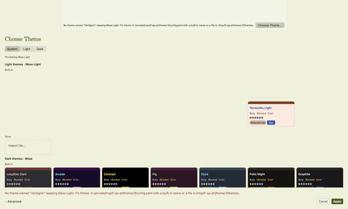
Not fixed. The window is never key and the screen is locked, so this may be the same lazy-grid staleness as R4.5. Round 2 showed cards with a notice in Dark mode. Needs a look on an unlocked display.
The site is Loopflow Light on every page with no contrast failures. The phone draws its Machine's theme in both appearances, follows a change on return to the foreground, falls back to Loopflow's pair for unknown names, keeps the last answer while the Machine is away, and themes its sheets. Desktop reads and writes theme: through its server and names the server's file.
A physical iPhone. Desktop's Advanced disclosure (it ignores hook clicks), Apply/Cancel clicks, the Import panel, a key window's bar, the editor's Title bar row: unlocked display (ship-review).
1. Light cards missing from Choose Theme while the unknown-name notice is up (R5.10), if it shows on screen. 2. Version skew: neither side can read the other's config.theme, and both still say revision 9. The phone goes quiet, and Desktop shows a raw serde message with a Choose Theme… button that can't fix it (R5.7, R5.9). It lasts only until the Mac's server matches the client.
Isolated bundle com.loopflow.mac.qath4.dev, private Machine /tmp/lfq4 on the branch lf server run, a git-planned repository with one Task, production mode, .lf/qa/QAHook.swift. Screen locked (CGSSessionScreenIsLocked true, idle 2.8 h). Run 2026-11-22 at 5e03228191. The captures were lost in cleanup; what each showed is written here.
The bundle build stopped at third_party.py package: "Third-party inputs changed". Compress had moved Fjord, Signal and Tannin Light's bars.
Fix: the catalogue holds only Loopflow's own files now (no companions, Sources.md or Licenses/), so scripts/third_party.py no longer hashes swift/Loopflow/Themes or scans it for notices. The inventory loses 27 entries; test_third_party.py 9 passed; the bundle packaged. A theme edit can no longer break a Dev build or a release.
Settings → Appearance opened in Light mode on Loopflow Light, 13 light cards, Import tile. Clicking Fjord Light previewed it across the chooser and main window, ringed it, headed the section "Light themes · Fjord Light"; the mode stayed Light. Light mode shows no dark cards, so a card click cannot cross sides there.
Clicking Fig in the dark section: mode stayed System, "Previewing Fig", heading "Dark themes · Fig", Fig ringed with Customize, the light side kept "Harbor Light". The main window turned plum with lime headings. Same as before the change.
A copy of Fig as Plum: the control switched to Dark, Plum previewed, filed under dark Yours with Customize and Delete, "Supplied: …; 16 indexed colors; 34 app roles." and no Derived line. Closing the window wrote nothing: config.yaml still read theme: Loopflow Light, no themes/.
A capture two seconds after switching System → Light drew the chosen card's Customize button on top of the "Yours" label (chosen card in the last light row). Five seconds after the same switch the grid had re-measured and the label sat below the button. Not fixed: it looks like the non-key window's lazy re-layout, and may never show on a key window.
A card click previews on the card's own side in Light and System mode; import still switches Light/Dark mode and leaves System alone; closing discards the draft; the bundle packages after theme edits.
Apply and Cancel clicks, the real file panel, a key window's bar, the editor's Title bar row, the three moved light bars on a real title bar: unlocked display (ship-review).
The Customize-over-Yours frame (R4.5), if it shows on screen. Moss's quiet bar (round 3) still waits for a look.
Same method as round 2: isolated bundle com.loopflow.mac.qath3.dev, private Machine /tmp/lfq3 on the branch lf server run, a git-planned repository with one Task, production mode, .lf/qa/QAHook.swift. Screen locked (CGSSessionScreenIsLocked Yes, idle 2.5 h). Run 2026-11-22 at d62943431e. The hook gained import <path>, which stands in for the Import tile's file panel and then calls what the panel's OK calls.
theme: Verdigris"No theme named “Verdigris”: keeping Loopflow Light. Fix theme: in …/config.yaml with a built-in name or a file in …/themes." with Choose Theme… — the unknown-name sentence, no special case.
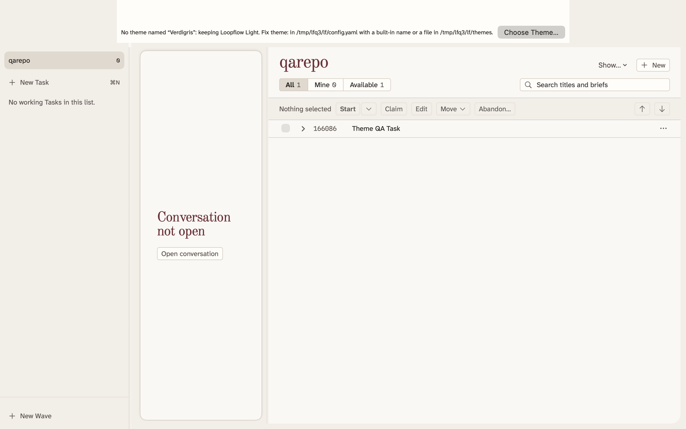
No Light/Dark theme buttons. The heading reads "Light themes · Loopflow Light". Moss Light sits where Verdigris was. The sentence repeats under the grid until a preview starts.

Light mode showed only the light section. Importing Bog (a copy of the Moss file) switched the segmented control to Dark, previewed Bog across the chooser, headed the section "Dark themes · Bog" and filed the card under dark Yours, ringed, with Customize and Delete.
Under it the diagnostics read "Supplied: …; 16 indexed colors; 34 app roles." then "Derived: ." — an empty list, shown for every complete file (every catalogue file now is). Present since #1560.
Fix: ThemeFile.parse writes the Derived line only when something was derived; ThemeTests.importDiagnosticsNameOnlyWhatWasDerived covers a partial and a complete file.

Mode stays System; Bog previews on the dark side (macOS is in light) as a card click does, both headings name their side's choice. The light side's chosen card takes Bog's focus color for its ring while Bog previews.
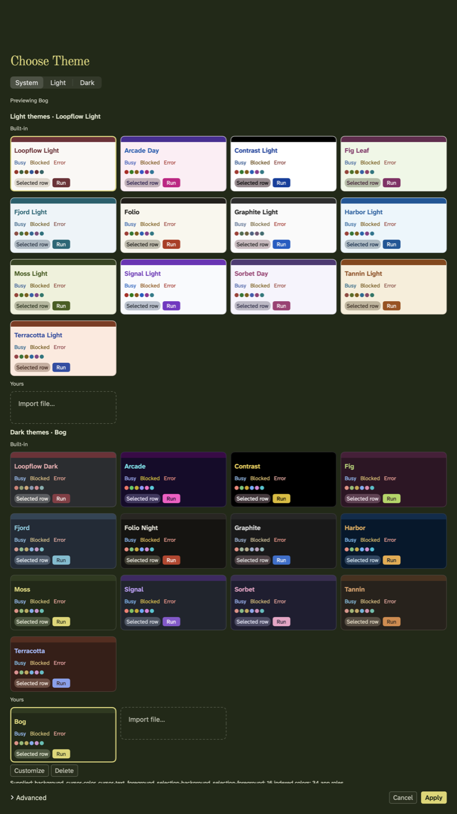
Cancel answered no synthesized click (two tries); nothing reached config.yaml or themes/. Closing the window left the setting unchanged.
lf set --global theme Moss, reopened: deep moss window and bar, lichen-yellow headings, no notice.
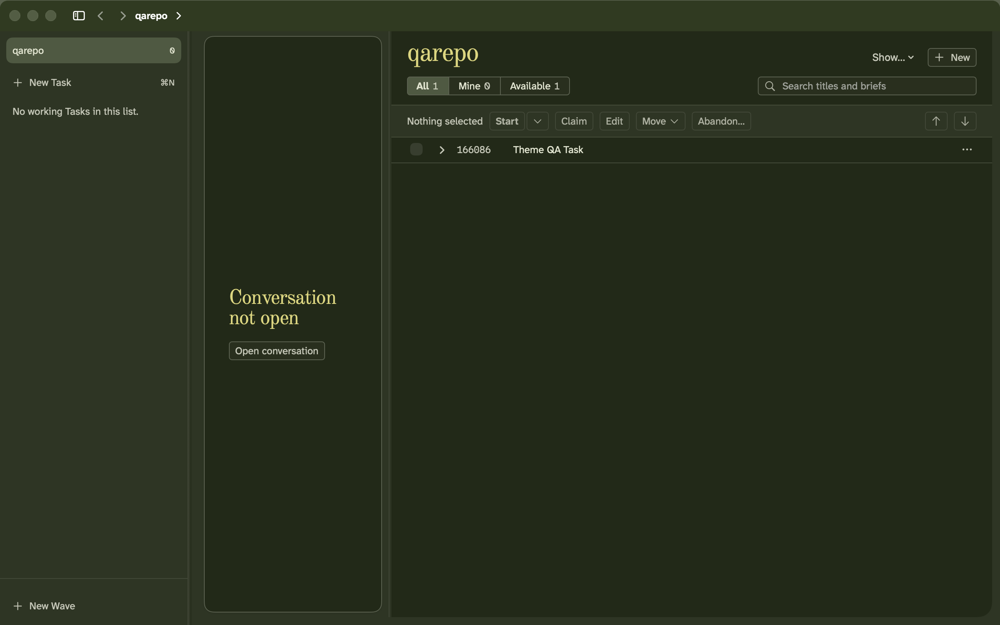
#2e3a1e on #202916) is a quiet band like Graphite's, not an accent bar; the family spec chose it. A look on screen decides whether it stays.Branch Dev app as an isolated bundle (com.loopflow.mac.qath2.dev) on a private Machine (/tmp/lfq2, branch lf server run, a git-planned repository with one Task), production mode, driven by .lf/qa/QAHook.swift. The screen was locked (CGSSessionScreenIsLocked 1, idle 2 h+). Run 2026-11-22 at 4c9120dff4.
The bundle build stopped at third_party.py package: "Third-party inputs changed". Round 2's last edit to swift/Loopflow/Themes/README.md came after the inventory refresh. Fixed with third_party.py refresh (one hash). Still nothing runs third_party.py check before a build; see questions.
theme: Gruvbox DarkOpens in Loopflow Dark with the sentence and a Choose Theme… button above the window.

13 dark cards, each in its own colors, the chosen card ringed. The Customize button under the chosen card made that grid cell taller and the row centred every card on it: the chosen card sat about 14 pt above its neighbours (before, below). The retired-name sentence repeats at the bottom until a theme is previewed.
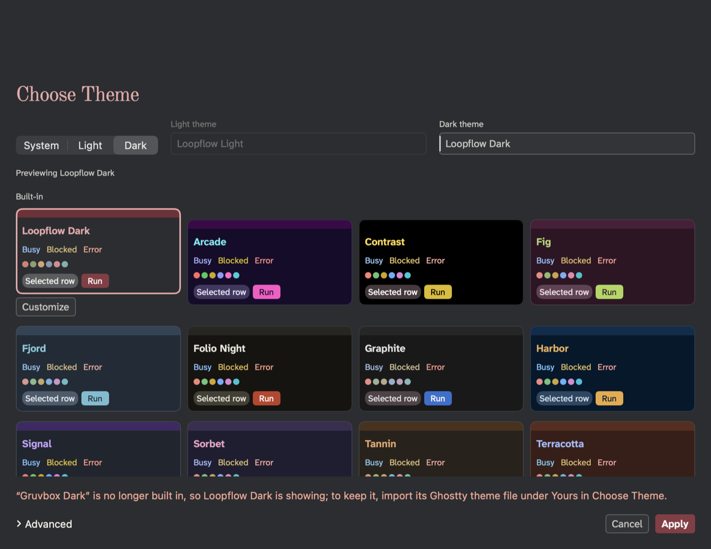
Clicking Fig previews plum with lime across the whole chooser and moves the ring.
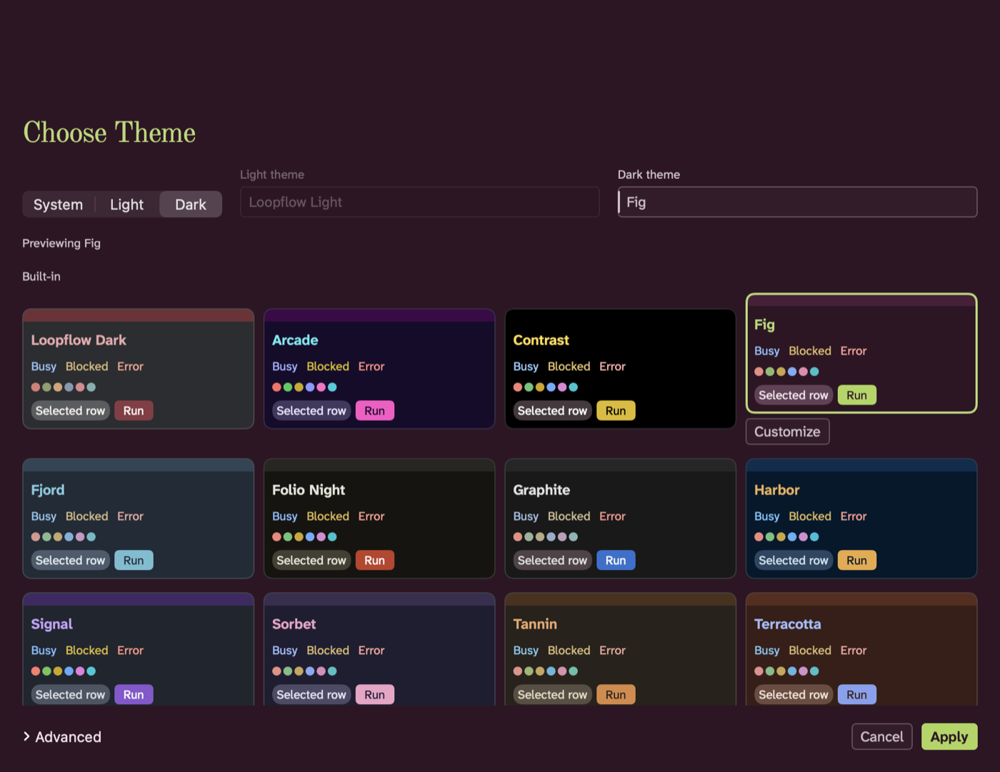
Fix: the grid's items are top-aligned (GridItem(..., alignment: .top) in ThemeChooser.swift); the Customize button now hangs below its card without moving the row.
Apply answered no synthesized click this run (no config.theme write reached the server, five tries, single and paired), so Fig was set with lf set --global theme Fig. The running window turned plum with a plum bar and lime headings, and the notice went away.

light:Fig Leaf,dark:Fig, after the fixLight themes first, each family's light half; the chosen Fig Leaf card's row lines up with its neighbours.
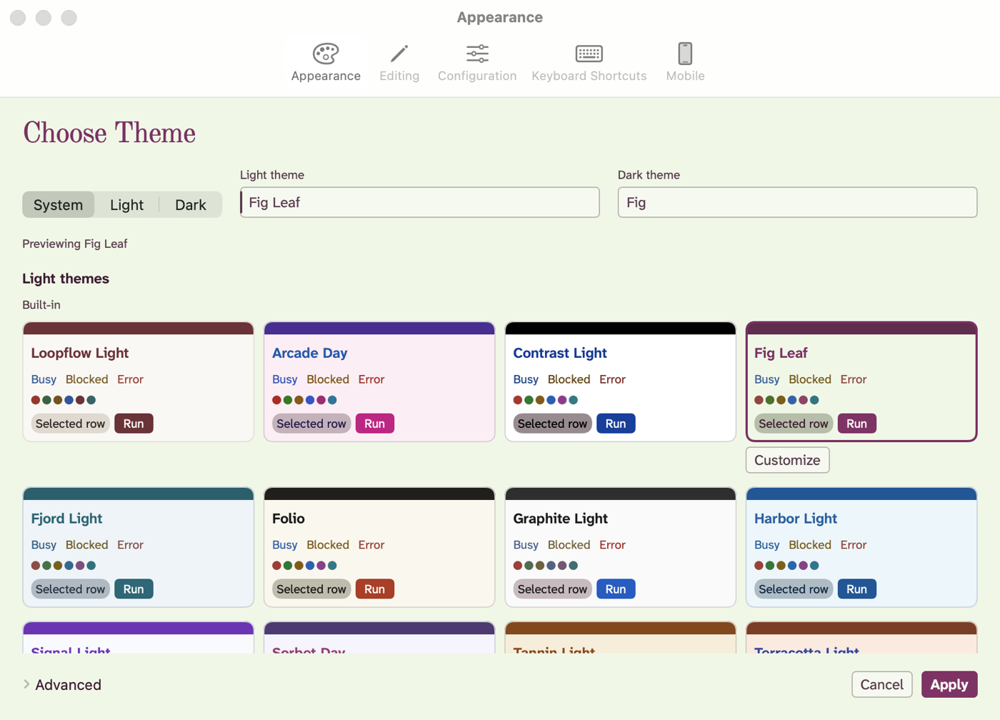
Opens the editor on Fig Leaf with "Apply writes …/themes/Fig Leaf". Its groups don't open under synthesized clicks, so the Title bar row was not seen.
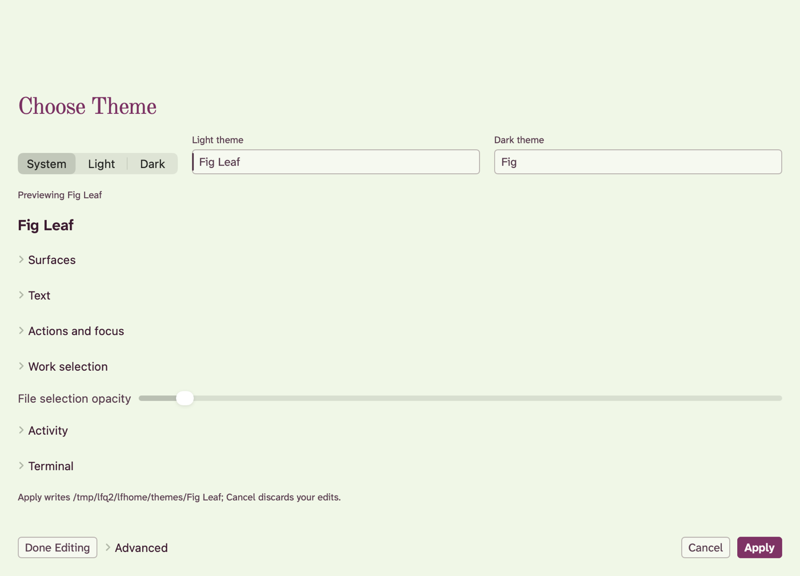
Branch Dev app as an isolated bundle (com.loopflow.mac.qath.dev) on a private Machine (/tmp/lf-qa-th, branch lf server run, a git-planned repository with two Tasks), production mode, driven by .lf/qa/QAHook.swift. The screen was locked, so captures are the app's own frame views. Run 2026-11-22.
The first build stopped at third_party.py package: "Third-party inputs changed". The inventory hashes every catalogue theme file and the Themes README; all 25 had changed. No CI check runs this, so it would have surfaced first in a Dev build or a release. Fixed: refreshed swift/LoopflowMac/ThirdPartyNotices/inventory.json (commit "Refresh the third-party inventory for the changed theme files").
Burgundy bar, white breadcrumb, burgundy headings on the warm ground.

lf set --global theme "Loopflow Dark"The running window repainted without a relaunch: the same burgundy bar over the blue-grey window, rose headings. Bar pixels read back identical in both defaults (#7e4448 each; the hook's window is never key, which lightens the toolbar from the stated #722f37).

Settings → Appearance. The sample's bar paints the role (burgundy for Loopflow Dark). Customize opened the editor and its groups; "Actions and focus" did not expand under synthesized clicks, so the Title bar row and a saved file were not seen.
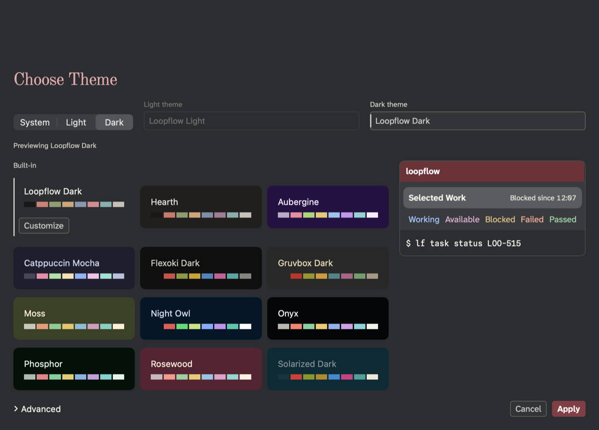
Old DarkNo loopflow-titlebar, accent #722f37, ground #2b3036. The bar comes from that file's accent: the muted plum-grey it painted before (rule gives #443036), not ANSI 4 and not the new burgundy.

Old LatteAccent #7d705c. The rule darkens it to #635849 so the second text level reads; the bar is visibly darker than main painted it, white breadcrumb.
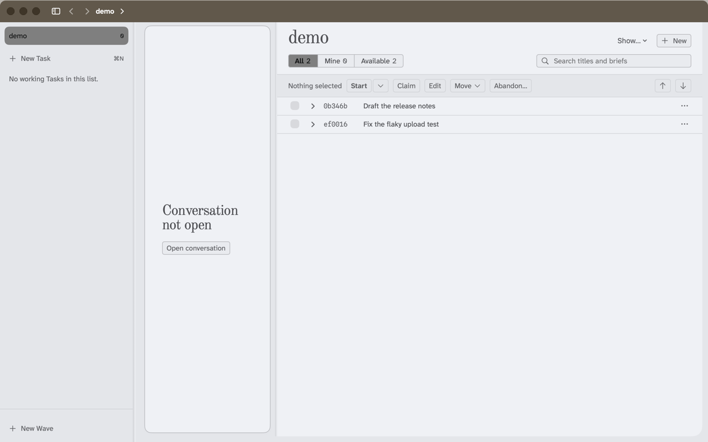
GitHub Light Default and Catppuccin Latte straight from Ghostty.app are refused for terminal cursor and selection text, and the app falls back to Loopflow Light with the notice. This is the existing import check, not this change; the title bar adds no refusal of its own here.
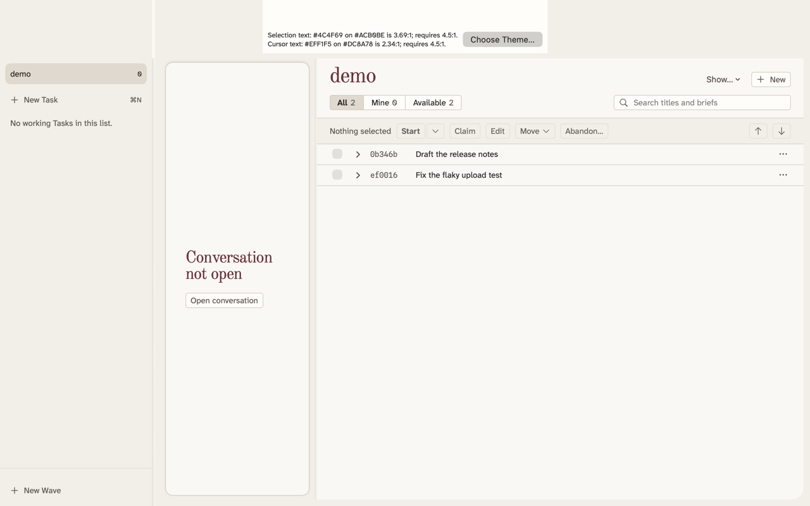
loopflow-titlebar get the bar from their own accent, darkened where the second text level would fail.| Command | Result | Who runs it |
|---|---|---|
| Branch Dev bundle, both defaults and two role-less files, looked at | passed, locked screen | this step |
swift test … 'WorkPaletteTests|TerminalColorTests|ThemeTests' | not rerun here | gate |